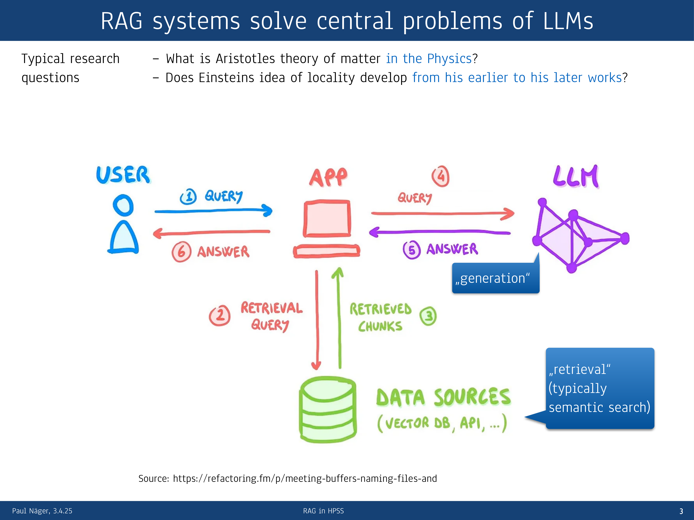
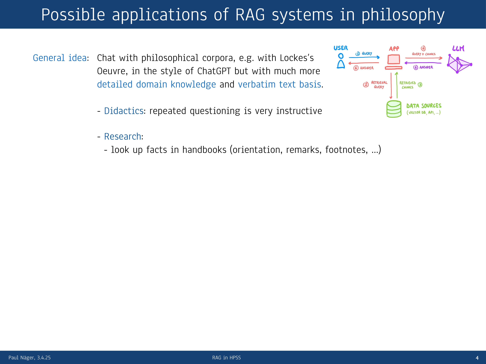
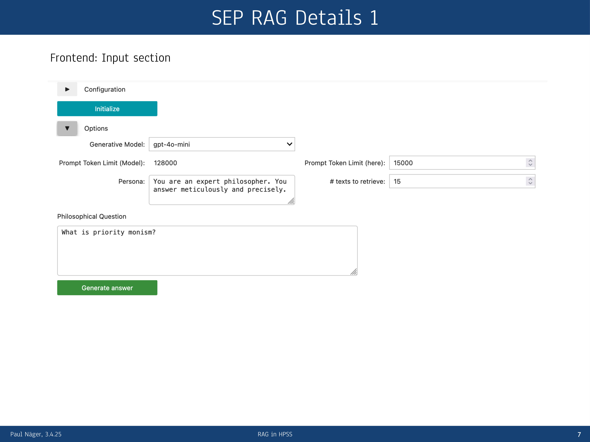
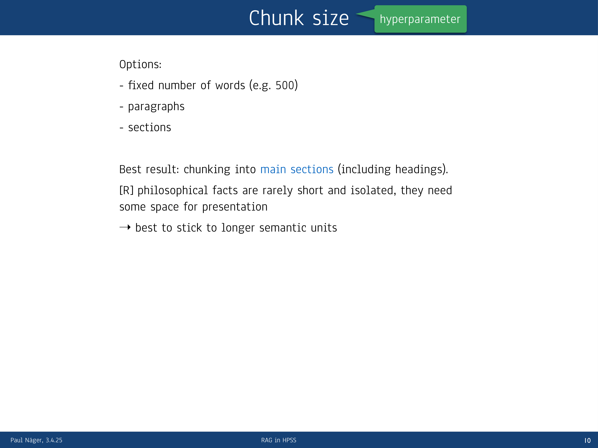

12 RAG systems solve central problems of LLMs
Overview
This report systematically documents the application of Retrieval-Augmented Generation (RAG) systems within philosophy, particularly addressing the discipline’s stringent requirements for linguistic and semantic accuracy. Paul Näger presents a compelling perspective on RAG, highlighting its capacity to resolve core limitations inherent in Large Language Models (LLMs), such as restricted access to full texts, finite context windows, and challenges in attribution. Whilst LLMs excel at generating generalisable statistical rules for text production, they are not designed for verbatim text learning. This poses a critical necessity for philosophical inquiry, which demands deep engagement with original sources and their fine-grained formulations. Consequently, RAG systems emerge as a vital solution.
Näger’s presentation explores diverse applications, ranging from pedagogical tools to advanced research functionalities. For instance, RAG enables students to interact conversationally with philosophical corpora, such as Locke’s Oeuvre, fostering deeper textual understanding. For researchers, RAG facilitates efficient fact-finding in handbooks, exploration of previously unexamined corpora, identification of passages for close reading, and the precise answering of specific research questions.
A practical RAG implementation, utilising the Stanford Encyclopedia of Philosophy (SEP) as its data source, demonstrates these capabilities. Initially conceived as a community tool, the project evolved into a qualitative study investigating optimal RAG system configurations for philosophical contexts. This research meticulously examines model choices, including generative LLMs (e.g., gpt-4o-mini) and embedding models, alongside the intricate tuning of hyperparameters such as the number of retrieved documents (top-k), input/output token limits, generation temperature, and chunk size and overlap.
The methodology employs a theoretically grounded trial-and-error approach, emphasising the criticality of robust evaluation standards for assessing complex, unstructured philosophical propositions. A key finding reveals that chunking content into main sections, despite their average length (approximately 3000 words) exceeding the embedding model’s cutoff (512 words), yields superior results. This efficacy largely stems from the highly systematised nature of the SEP. Furthermore, the system incorporates reranking as an additional step to enhance retrieval accuracy. It leverages a generative LLM for more advanced semantic differentiation, albeit at increased computational cost.
Ultimately, RAG systems offer significant advantages by integrating verbatim corpora and specialised domain knowledge, thereby reducing hallucinations and enabling precise citation. Their effective deployment, however, necessitates careful tweaking, rigorous evaluation with representative question sets, and the indispensable involvement of domain experts, particularly when exploring unfamiliar corpora. Challenges persist, notably the degradation of answer quality when relevant documents are scarce. Paradoxically, RAGs tend to perform less effectively on broad overview questions, suggesting a need for more flexible, potentially agentic RAG architectures in future developments.
12.1 Addressing Core LLM Challenges with RAG Systems
Philosophical inquiry frequently poses complex questions. One might seek to elucidate Aristotle’s theory of matter within his Physics or trace the evolution of Einstein’s concept of locality across his works, from early relativity papers to his 1948 publication on ‘Quantenmechanik und Wirklichkeit’. Whilst Large Language Models (LLMs) like ChatGPT can furnish reasonably differentiated responses to these queries, they exhibit several fundamental limitations. Retrieval-Augmented Generation (RAG) systems specifically address these challenges, offering a robust framework for enhancing LLM performance in knowledge-intensive domains.
12.2 RAG System Architecture and Workflow

A RAG system fundamentally integrates external data sources to augment the capabilities of Large Language Models. This architecture necessitates a dedicated data source, which, for philosophical research, might comprise a specific corpus such as the complete works of Aristotle or Einstein. Researchers retrieve relevant documents from this corpus, typically employing semantic search, though hybrid or classic search methods also remain viable options. Subsequently, these retrieved text chunks dynamically augment the prompts directed to the LLM. Crucially, this augmentation process directly resolves a significant limitation of standalone LLMs: their lack of direct access to full, original texts. Whilst LLMs may have encountered these texts during their training, they cannot reliably quote specific passages or avoid factual inaccuracies, often leading to ‘hallucinations’.
12.3 Overcoming LLM Limitations: Access and Verbatim Learning
Large Language Models, despite their sophisticated conversational abilities, inherently lack direct access to the complete texts they discuss. Consequently, when prompted to quote specific sections from a paper, an LLM may either admit its inability or, more problematically, generate fabricated content. This limitation stems from their training methodology; LLMs are not engineered to memorise texts verbatim. Instead, their design explicitly prevents rote learning, compelling them to acquire generalisable statistical rules for text production. Philosophical research, however, with its profound emphasis on linguistic and semantic accuracy, critically depends upon direct engagement with original textual sources and their precise, fine-grained formulations. RAG systems, by providing explicit access to these corpora, directly address this fundamental disparity.
12.4 Addressing Context Window Limitations and Attribution
Beyond facilitating direct textual access, RAG systems adeptly navigate two further critical challenges posed by Large Language Models. Firstly, they mitigate the issue of a limited context window. Although models like ChatGPT 4.0 boast a substantial context of 128,000 tokens, extensive corpora can rapidly exhaust this capacity. RAG systems circumvent this by intelligently retrieving and supplying only the most pertinent text chunks, thereby ensuring that the LLM operates within its operational limits whilst still receiving highly relevant information. Secondly, RAG systems inherently resolve the attribution problem. They furnish explicit citations for the information provided, mirroring the functionality observed in platforms like Perplexity, where numbered references link claims directly to their source documents. This capability is paramount for academic rigour, ensuring the verifiability and trustworthiness of generated content.
12.5 RAG System Workflow: Query, Retrieval, Augmentation, Generation

The operational workflow of a RAG system follows a systematic, multi-stage process. Initially, a user submits a query to a dedicated application. This application then initiates a retrieval query, directing it towards various data sources, which may include vector databases or APIs. Upon receiving this query, the data sources return relevant text chunks to the application. Crucially, the application then combines the original user query with these newly retrieved chunks, forming an ‘augmented’ query. This enriched input is subsequently transmitted to a Large Language Model (LLM) for processing. The LLM, leveraging both the query and the contextual chunks, generates a comprehensive answer, which it relays back to the application. Finally, the application delivers this refined answer to the user, ensuring that responses are both informative and grounded in specific, verifiable sources.
12.6 Philosophical Applications of RAG Systems: Didactics and Research
RAG systems offer transformative potential across various facets of philosophical engagement. Fundamentally, they enable conversational interaction with extensive philosophical corpora, such as Locke’s complete works, mirroring the intuitive style of ChatGPT whilst providing significantly more detailed domain knowledge and a verifiable verbatim text basis. This capability proves invaluable for didactics; repeated questioning becomes a highly instructive method for students to progressively deepen their understanding of complex texts, moving from general concepts to intricate details. For instance, students can explore Locke’s epistemology or his theory of matter.
Moreover, RAG systems hold considerable promise for research. They facilitate efficient fact-finding within handbooks, streamlining the process of locating specific information for orientation, remarks, or footnotes. Researchers can also employ these systems to explore previously unexamined corpora, provided the texts are first digitised, gaining a comprehensive overview of their contents. Furthermore, RAG aids in identifying precise passages for close reading that directly pertain to specific research questions. Ultimately, these systems aspire to furnish detailed answers to at least components of complex research questions, painting a compelling vision for future philosophical inquiry.
12.7 RAG for Philosophical Corpora: Enhanced Domain Knowledge

The overarching concept driving the application of RAG systems in philosophy centres on enabling conversational interaction with extensive philosophical corpora, such as the complete works of John Locke. This approach aims to replicate the intuitive user experience of platforms like ChatGPT. Crucially, however, it significantly enhances the interaction by providing a far more detailed domain-specific knowledge base and, critically, a verifiable verbatim textual foundation, ensuring scholarly rigour and precision.
12.8 Pedagogical Utility: Deepening Textual Engagement
For pedagogical purposes, RAG systems offer a remarkably effective instructional approach. Students can engage with challenging philosophical texts, such as Locke’s Essay Concerning Human Understanding, by initiating a conversational dialogue. This allows them to begin with broad inquiries, like Locke’s general philosophical tenets, and then progressively delve into more specific areas, such as his ideas on epistemology or his theory of matter. Through this iterative questioning, RAG systems provide a dynamic and instructive pathway for students to achieve a profound understanding of complex textual content.
12.9 Research Applications: Fact-Finding and Corpus Exploration
In the realm of research, RAG systems prove indispensable for tasks such as fact-finding within handbooks, providing essential orientation, facilitating remarks, and generating accurate footnotes. Historically, scholars manually consulted physical books; now, whilst LLMs can offer information, its reliability remains questionable, often leading to hallucination. Consequently, robust RAG systems become critical for ensuring the veracity of retrieved facts. Furthermore, these systems enable the exploration of previously unexamined corpora. Once digitised, such texts can be interrogated conversationally, yielding deeper overviews of their content and unlocking new avenues for scholarly investigation.
12.10 Advanced Research Applications: Close Reading and Question Answering

Beyond basic fact-finding, RAG systems significantly advance philosophical research by enabling the precise identification of passages for close reading that directly pertain to a specific research question. Ultimately, these systems hold the potential to furnish detailed answers, at least to components of complex research questions. This capability paints a compelling vision for the future of philosophical inquiry, promising to streamline and deepen scholarly engagement with intricate textual and conceptual challenges.
12.11 Example RAG Implementation: Stanford Encyclopedia of Philosophy
Paul Näger and his team developed an illustrative RAG system, leveraging the Stanford Encyclopedia of Philosophy (SEP) as its foundational data source. They systematically scraped the content of this well-regarded online handbook and converted it into markdown format, preparing it for integration into the RAG architecture.
12.12 Initial Aim: Community Tool

Initially, Näger’s project aimed to develop a practical and beneficial tool specifically for the academic community, providing a valuable resource for philosophical inquiry.
12.13 Evolving Aims: From Tool to Qualitative Study

Paul Näger and his team implemented a RAG system utilising the Stanford Encyclopedia of Philosophy as its data source. However, initial attempts to configure the system using conventional textbook approaches for retrieval and generation produced unsatisfactory results; indeed, the answers proved inferior to those generated by ChatGPT alone. This unexpected outcome prompted a significant re-evaluation of the project’s objectives, shifting its primary aim from merely developing a functional tool to undertaking a comprehensive qualitative study on the optimal setup of RAG systems specifically tailored for philosophical applications.
12.14 Qualitative Study Focus: Model Choices and Hyperparameter Tuning
Näger’s qualitative study meticulously investigates two critical areas for optimising RAG system performance in philosophy. Firstly, it scrutinises model choices, specifically evaluating the efficacy of various generative Large Language Models and their corresponding embedding models. Secondly, the study delves into the intricate process of hyperparameter tuning. This involves systematically adjusting parameters such as the number of documents retrieved (top-k), the maximum input and output token lengths, the temperature or top-p settings for text generation, and the optimal chunk size and overlap for document segmentation. Each of these parameters profoundly influences the quality and relevance of the generated responses.
12.15 Methodological Challenges: Retrieval Semantic Mismatch and Reranking
Beyond model selection and hyperparameter tuning, Näger and his team confronted additional methodological challenges, notably the issue of retrieval semantic mismatch. To address this, they implemented reranking, an advanced technique designed to refine the relevance of retrieved documents. Their overarching methodology employs a theoretically grounded trial-and-error approach, systematically assessing how various adjustments improve answer quality. Crucially, sound evaluation remains paramount, particularly given the complex nature of philosophical propositions, which rarely reduce to simple, atomic facts. Evaluating the factual accuracy of these nuanced statements presents a significant challenge, demanding rigorous and context-sensitive assessment criteria.
12.16 Frontend Overview: Configuration and Comparative Answers
The system’s frontend, as demonstrated by Näger, provides a comprehensive interface for configuration and comparative analysis. Users can specify the Generative Model, currently set to gpt-4o-mini, and define prompt token limits, with a model capacity of 128,000 tokens and a user-defined limit of 15,000. Furthermore, the interface allows setting the number of texts to retrieve, typically 15. A ‘Persona’ text area meticulously instructs the model to act as an ‘expert philosopher’, ensuring ‘meticulous and precise’ answers. Users input their philosophical questions, such as ‘What is priority monism?’, into a dedicated field. The system then presents a comparative output, displaying both an ‘Answer with LLM alone’—serving as a benchmark—and an ‘Answer with RAG’, facilitating direct qualitative assessment. Complementing these answers, a ‘Retrieved Texts Overview’ table details the source ‘file_names’, ‘sec_heading’, ‘distances’ (relevance scores), ’length_/_token’, ‘total_token’, and whether each text was ‘included’ in the prompt, offering full transparency into the retrieval process.
12.17 Backend Code and Output Details
Näger’s team crafted the system’s backend in Python, orchestrating the intricate processes of text handling and retrieval. Functions such as print_section_overview and print_paragraph_overview provide detailed insights into how text sections and paragraphs are processed, whilst print_overview_intro displays the total document count within the dataset. Conditional calls throughout the code exemplify a modular design, facilitating flexible text processing and retrieval logic. The system’s output meticulously lists the retrieved texts, detailing article names, specific section headings, and crucially, indicating which texts were fully included in the prompt and which were truncated due to token limitations, thereby ensuring transparency in the information provided to the LLM.
12.18 Optimising Chunk Size for Philosophical Corpora
Optimising chunk size represents a critical hyperparameter in RAG system development. Näger and his team explored three primary chunking strategies: employing a fixed number of words (e.g., 500), segmenting by paragraphs, or dividing content into main sections, whether at a lower or higher hierarchical level. Surprisingly, chunking into main sections, inclusive of their headings, yielded the most favourable results. This outcome proved counter-intuitive, given that the average section length of approximately 3000 words substantially exceeded the embedding model’s typical cutoff of 512 words. This efficacy, however, likely stems from the highly systematised structure of the Stanford Encyclopedia of Philosophy, where the initial 500 words of a section often encapsulate its core ideas. Such a strategy might prove less effective for more heterogeneous or less rigorously structured texts. Consequently, future work plans to investigate embedding models with extended context windows, such as Cohere Embed 3, to better accommodate these longer semantic units.
12.19 Reranking: Addressing Retrieval Semantic Mismatch
Reranking constitutes a crucial additional step within the retrieval pipeline, specifically designed to mitigate the problem of false positives, where initially retrieved texts lack true relevance to the query. The primary aim of reranking involves reordering documents based on their actual pertinence. To achieve this, Näger’s team employs a generative Large Language Model (gLLM) to evaluate the relevance of the texts. This approach leverages the gLLM’s superior semantic differentiation capabilities, which significantly surpass those of simpler embedding models. The evaluation process incorporates specific scoring categories, including the informativeness of the text and the length of its relevant passages, culminating in a comprehensive total score. Whilst reranking demonstrably yields highly effective results, it concurrently incurs a substantial increase in computational costs.
12.20 Advantages of RAG Systems in Scientific Tasks
RAG systems offer compelling advantages for scientific tasks. They seamlessly integrate verbatim corpora alongside specialised domain knowledge, thereby furnishing more detailed answers and significantly reducing the incidence of hallucinations. Furthermore, these systems inherently facilitate the precise citation of relevant documents, a critical feature for academic integrity. Consequently, the RAG architecture proves exceptionally well-suited for assisting across a wide spectrum of scientific endeavours, enhancing both the accuracy and trustworthiness of AI-generated content.
12.21 Cautions and Challenges in RAG Implementation

Whilst RAG systems offer substantial benefits, their effective deployment necessitates careful consideration of several cautions and challenges. Firstly, RAG systems inherently demand extensive tweaking; optimal settings are highly contingent upon the specific corpus and the nature of the questions posed. Secondly, rigorous evaluation remains paramount, requiring a representative set of questions and meticulously prepared expected answers. When exploring previously unexamined corpora, the indispensable involvement of domain experts, such as philosophers, becomes critical for accurate assessment. A significant challenge arises when no relevant documents are retrieved, leading to a marked decrease in answer quality, which then necessitates prompt adjustment. Paradoxically, RAG systems often yield inferior results for widely discussed overview questions, such as ‘What are the central arguments against scientific realism?’ This phenomenon occurs because RAGs, by design, concentrate on local information, which can inadvertently distract from the broader perspective required for comprehensive overview responses. Consequently, future developments must focus on crafting more flexible systems, particularly agentic RAG architectures, capable of discerning between question types and adapting their approach accordingly.
12.22 Additional Visual Materials
The following slides provide supplementary visual information relevant to the presentation:
This slide, titled “SEP RAG Overview”, presents a detailed view of the system’s frontend. A “Configuration” section, which can be initialised, includes an “Options” subsection. Here, the “Generative Model” is set to gpt-4o-mini, with a “Prompt Token Limit (Model)” of 128,000 and a user-defined “Prompt Token Limit (here)” of 15,000. The system is configured to retrieve 15 texts. A “Persona” text area instructs the model to act as an “expert philosopher”, ensuring “meticulous and precise” answers. The “Philosophical Question” field contains the query: “What is priority monism?”. Below the “Generate answer” button, the slide presents two comparative answers. The “Answer with LLM alone” defines priority monism as a metaphysical position where a single, fundamental entity is ontologically prior to its constituent parts, contrasting it with pluralism and mereological nihilism, and citing examples like the universe and philosophers such as Spinoza. The “Answer with RAG”, titled “Response to ‘What is priority monism?’”, offers a similar but more nuanced definition, asserting the existence of exactly one basic concrete object (the universe or cosmos) whose parts are derivative. It notes the contrast with existence monism, discusses mathematical expressions, ontological priority, and relevance to quantum mechanics (entangled systems). Historically, it associates Plato and Spinoza with this view and notes its recent traction against competing doctrines. Finally, a “Retrieved Texts Overview” table lists five documents, detailing their ‘file_names’, ‘sec_heading’, ‘distances’ (relevance scores), ’length_/_token’, ‘total_token’, and ‘included’ status. The table indicates that the RAG system retrieved relevant sections from ‘monism’ and ‘disability-care-rationing’ files, with the first two ‘monism’ entries fully included, and a third ‘monism’ entry partially included. The ‘distances’ column suggests lower values indicate higher relevance. The footer includes “Paul Näger, 3.4.25”, “RAG in HPSS”, and page number “6”.
This slide, also titled “SEP RAG Overview”, visually divides into “Frontend” on the left and “Backend: Python Code” on the right. The frontend section displays a collapsed “Configuration” panel and an expanded “Options” panel, allowing selection of gpt-4o-mini as the “Generative Model” and setting token limits (128,000 model, 15,000 user-defined). The “Persona” is set to “expert philosopher”, and 15 texts are to be retrieved. The “Philosophical Question” is “What is priority monism?”. The interface then presents comparative answers from an “LLM alone” and “RAG”, with the RAG answer providing a more detailed, source-attributed philosophical definition. A “Retrieved Texts Overview” table details source files, section headings, distances, token lengths, and inclusion status. The “Backend: Python Code” section displays Python function definitions, including print_section_overview, print_paragraph_overview, and print_overview_intro, illustrating the modular and configurable nature of the backend’s text processing and retrieval logic. The footer contains “Paul Näger, 3.4.25”, “RAG in HPSS”, and page number “6”.

Titled “SEP RAG Details 1”, this slide focuses on the “Frontend: Input section”. The interface features a “Configuration” section with an “Initialize” button. The “Options” section provides detailed settings: “Generative Model” is gpt-4o-mini, “Prompt Token Limit (Model)” is 128,000, and “Prompt Token Limit (here)” is 15,000. The “Persona” instruction is “You are an expert philosopher. You answer meticulously and precisely.” The system is set to retrieve 15 texts. The “Philosophical Question” input box contains “What is priority monism?”. A “Generate answer” button is present at the bottom. The footer includes “Paul Näger, 3.4.25”, “RAG in HPSS”, and page number “7”.
This slide, “SEP RAG Details 2”, presents the “Frontend: Output-section answers”. It features a side-by-side comparison of answers to ‘What is priority monism?’. The ‘Answer with LLM alone’ defines priority monism as a metaphysical position where a single, fundamental entity is ontologically prior to its constituent parts, contrasting it with mereological nihilism and citing examples like the universe and philosophers such as Spinoza. The ‘Answer with RAG’, titled “Response to ‘What is priority monism?’”, provides a more detailed, augmented definition, asserting the existence of exactly one basic concrete object (the universe or cosmos) whose parts are derivative and dependent on the fundamental whole (Text 0). It contrasts this with existence monism, discusses mathematical expressions, and highlights its relevance to emergent properties in quantum mechanics. Historically, it associates Plato and Spinoza with this view and notes its recent traction against competing doctrines. The RAG answer text is truncated, indicated by a scrollbar. The footer includes “Paul Näger, 3.4.25”, “RAG in HPSS”, and page number “8”.
Continuing the “SEP RAG Details 2” theme, this slide focuses on a “Comparative setup for qualitative evaluation” of output answers. It displays the “Answer with LLM alone” on the left, serving as a ‘benchmark’, which defines priority monism as a metaphysical position where a single ‘whole’ is ontologically prior to its derived parts, contrasting it with pluralism or mereological nihilism. On the right, the “Answer with RAG”, titled “Response to ‘What is priority monism?’”, provides a definition augmented by retrieved information, citing ‘Text 0’ multiple times. This RAG answer highlights the existence of exactly one basic concrete object (the universe), contrasts it with existence monism, discusses its mathematical expression, and notes its relevance to quantum mechanics and emergent properties. It also attributes the view to Plato and Spinoza and contrasts it with priority pluralism and nihilism. The RAG answer text is partially visible, with a scroll bar indicating more content. The footer includes “Paul Näger, 3.4.25”, “RAG in HPSS”, and page number “8”.
This slide, “SEP RAG Details 2”, continues the “Comparative setup for qualitative evaluation” of answers. The left section, “Answer with LLM alone”, explains priority monism as a metaphysical position where a single ‘whole’ is ontologically prior to its parts, which derive their existence from the whole. It contrasts this with pluralism and mereological nihilism, using the universe as an example and mentioning Spinoza. The right section, “Answer with RAG”, presents the “Response to ‘What is priority monism?’”. This augmented answer defines priority monism as the existence of one basic concrete object (the universe), with parts being derivative. It highlights phrases marked with ‘(Text 0)’ for source attribution, contrasts it with ‘existence monism’, mentions its mathematical expression, and its crucial role in understanding emergent properties in quantum mechanics. It also associates the view with ‘Plato and Spinoza’ and contrasts it with ‘priority pluralism’ and ‘nihilism’. The text on the right is truncated. The footer includes “Paul Näger, 3.4.25”, “RAG in HPSS”, and page number “8”.

The slide, “SEP RAG Details 2”, continues the “Comparative setup for qualitative evaluation” of answers. The “Answer with LLM alone” on the left defines priority monism as a metaphysical position where a single ‘whole’ is ontologically prior to its constituent parts, citing Spinoza and contrasting it with pluralism. The “Answer with RAG” on the right, titled “Response to ‘What is priority monism?’”, provides a definition with specific phrases highlighted and marked with ‘(Text 0)’, indicating retrieved information. This RAG-generated answer highlights ‘existence monism’ as a contrast, states ‘there exists exactly one basic entity’ (the cosmos), and notes its ‘crucial for understanding emergent properties found in quantum mechanics’. It associates ‘Plato’ and Spinoza with this view and contrasts it with ‘priority pluralism’ and ‘nihilism’. The RAG answer ends abruptly, suggesting an interactive or truncated output. The footer indicates “Paul Näger, 3.4.25”, “RAG in HPSS”, and page number “8”.
Titled “SEP RAG Details 3”, this slide presents the “Frontend: Output section retrieved texts” under the heading “Retrieved Texts Overview:”. It features a table with six columns: ‘file_names’, ‘sec_heading’, ‘distances’, ’length_/_token’, ‘total_token’, and ‘included’. The table lists 15 retrieved text segments. For instance, the first entry is from ‘monism’, section ‘## 3. Priority Monism’, with a distance of 0.448, length of 12515 tokens, total tokens 12515, and marked ‘Yes’ for inclusion. The ‘distances’ column likely represents a similarity score, with lower values indicating higher relevance. The ‘included’ column shows that only the top two most relevant sections were fully included, and the third was partially included, suggesting a cutoff based on relevance or a maximum token limit for the context provided to the language model. The ‘total_token’ column tracks the cumulative token count of all retrieved sections. The footer includes “Paul Näger, 3.4.25”, “RAG in HPSS”, and page number “9”.
This slide, “SEP RAG Details 3”, continues to detail the “Frontend: Output section retrieved texts” under “Retrieved Texts Overview:”. It displays a comprehensive table of 15 retrieved text segments, indexed from 0 to 14. The table’s columns are ‘file_names’, ‘sec_heading’, ‘distances’, ’length_/token’, ‘total_token’, and ‘included’. The ‘file_names’ include ‘monism’, ‘disability-care-rationing’, ‘neutral-monism’, and others. The ‘sec_heading’ specifies the section (e.g., ‘## 3. Priority Monism’, ‘## Abstract’). ‘Distances’ range from 0.448 to 1.241, indicating relevance. ’length/_token’ shows segment lengths, and ‘total_token’ tracks cumulative token count. The ‘included’ column indicates ‘Yes’, ‘No’, or ‘Partially’. Several rows are highlighted: the first two ‘monism’ entries are yellow-highlighted and marked ‘Yes’ for inclusion. The third ‘monism’ entry is yellow-highlighted and ‘Partially’ included. A ‘disability-care-rationing’ entry is highlighted in reddish-pink and marked ‘No’. This highlighting likely draws attention to specific retrieval outcomes and inclusion criteria. The footer includes “Paul Näger, 3.4.25”, “RAG in HPSS”, and page number “9”.
This slide introduces “Chunk size” as a “hyperparameter”, visually indicated by a green arrow pointing from the term to the label. The main body of the slide is blank, suggesting it serves as an introductory concept or a placeholder for further discussion on this key configurable parameter in RAG methodology. The footer contains “Paul Näger, 3.4.25”, “RAG in HPSS”, and page number “10”.
The slide, titled “Chunk size” and labelled as a “hyperparameter”, presents “Options:” for determining chunk size. These options are listed as:
fixed number of words (e.g. 500)
paragraphs
sections
This outlines different strategies for segmenting text or data. The footer displays “Paul Näger, 3.4.25”, “RAG in HPSS”, and page number “10”.

This slide, titled “Chunk size” and identified as a “hyperparameter”, reiterates the “Options:” for chunking:
fixed number of words (e.g. 500)
paragraphs
sections
It then states the “Best result: chunking into main sections (including headings).” A rationale is provided: “philosophical facts are rarely short and isolated, they need some space for presentation”. This leads to the conclusion: “best to stick to longer semantic units”. The footer contains “Paul Näger, 3.4.25”, “RAG in HPSS”, and page number “10”.
The slide, titled “Chunk size” and labelled as a “hyperparameter”, lists “Options:” for chunking:
fixed number of words (e.g. 500)
paragraphs
sections
It states the “Best result: chunking into main sections (including headings).” The rationale provided is that “philosophical facts are rarely short and isolated, they need some space for presentation”, leading to the conclusion “best to stick to longer semantic units”. A “NB” (Nota Bene) section highlights a key observation: “Average length of sections (approx. 3000 words) has been much longer than cutoff of the embedding model (512 words).” Despite this discrepancy, the slide notes “Nevertheless best results.” Another rationale explains that in “highly systematically ordered documents, beginnings of sections contain the main theme”. The footer contains “Paul Näger, 3.4.25”, “RAG in HPSS”, and page number “10”.
This slide, titled “Chunk size” and identified as a “hyperparameter”, details the “Options:” for chunking:
fixed number of words (e.g. 500)
paragraphs
sections
The “Best result:” was “chunking into main sections (including headings)”. The rationale is that “philosophical facts are rarely short and isolated, they need some space for presentation”, thus “best to stick to longer semantic units”. A “NB:” (Nota Bene) section highlights that the “Average length of sections (approx. 3000 words) has been much longer than cutoff of the embedding model (512 words).” Despite this, it notes “Nevertheless best results.” Another rationale states that in “highly systematically ordered documents, beginnings of sections contain the main theme”. A “planned:” section outlines future work: “try emb. models with longer context window like Cohere Embed 3”, suggesting experimentation with larger input sizes. The footer contains “Paul Näger, 3.4.25”, “RAG in HPSS”, and page number “10”.
The slide, titled “Chunk size” and explicitly labelled as a “hyperparameter”, begins by listing “Options” for chunking:
fixed number of words (e.g. 500)
paragraphs
sections
The “Best result” is stated as “chunking into main sections (including headings)”. An observation notes that “philosophical facts are rarely short and isolated, they need some space for presentation”, leading to the conclusion “best to stick to longer semantic units”. A “NB” (Nota Bene) point highlights that the “Average length of sections (approx. 3000 words) has been much longer than cutoff of the embedding model (512 words). Nevertheless best results.” A “planned:” section indicates future work to “try emb. models with longer context window like Cohere Embed 3”. Another observation states that in “highly systematically ordered documents, beginnings of sections contain the main theme”. The slide concludes with a crucial lesson: “effective chunking highly depends on the specifics of the corpus and the kind of questions”. The footer includes “Paul Näger, 3.4.25”, “RAG in HPSS”, and page number “10”.

This slide introduces “Reranking”, prominently displayed and clarified as an “additional step to retrieval”. This visual element emphasises the sequential nature of reranking within an information processing pipeline. The main body of the slide is blank, indicating that further details or diagrams related to reranking would likely be presented incrementally or on subsequent slides. The footer contains “Paul Näger, 3.4.25”, “RAG in HPSS”, and page number “11”.
This presentation slide focuses on “Reranking” as an “additional step to retrieval”. The main content area identifies the core problem that reranking aims to solve: “not all retrieved texts are relevant to the question (false positives)”. This highlights a common challenge in information retrieval where an initial search might yield documents that are not truly pertinent to the user’s query, necessitating a refinement step. The footer displays “Paul Näger, 3.4.25”, “RAG in HPSS”, and page number “11”.